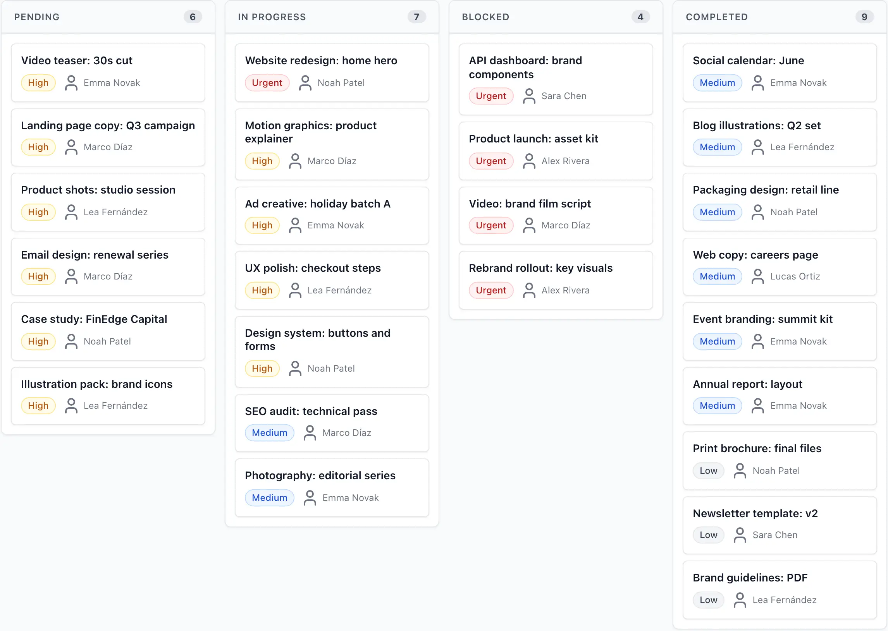
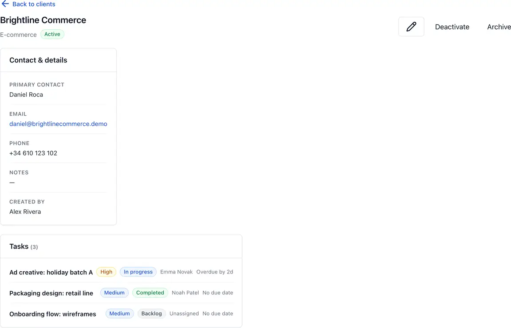
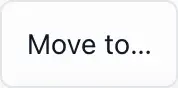

CASE STUDY · BRIEFLINE · 2026
From an ambiguous brief to a verifiable product.
A small agency runs client work in spreadsheets and chat. The brief asked for “a simple task tool”. I turned that into a product with defined boundaries, then produced the evidence that it behaves as described.
- MY ROLE
- Product definition, design, frontend, API, testing
- STACK
- React · NestJS · PostgreSQL · OpenAPI 3.1 · Playwright
- TYPE
- Independent case study, not commissioned client work
- EVIDENCE
- 483 tests, public demo, OpenAPI contract (12 Aug 2026)

Context and audience
Briefline is aimed at agencies of three to fifteen people: an owner who needs to know what is late, account managers who talk to clients, and freelancers who should see only their own work.
The job to be done is not “track tasks”. It is answering, in one screen, what is blocked, who is responsible and what the client was promised.
Constraints I set
- One team, one workspace — no multi-tenant billing in v1
- Roles limited to owner, manager and collaborator
- No real-time collaboration; conflicts resolved on write
- Demo data must be fictional and reset daily
The decisions that shaped the system
The contract comes first
The API is described in OpenAPI 3.1 before implementation. The client types, the server validation and the integration tests are all generated from or checked against that document, so a breaking change is visible in review rather than in production.
PATCH /tasks/{id}
If-Match: required
200 → updated task + new version
409 → current server state + changed fields
403 → permission denied, no partial write
Permissions live on the server
The interface hides what you cannot do, but every rule is enforced again in the API and covered by tests. A collaborator who guesses a URL gets a 403, not a surprise.

A stale update never wins silently
Every change is versioned and written atomically with its history entry. If two people edit the same task, the later request is rejected with the current state so the interface can show what actually happened instead of overwriting a colleague.

The states most tools postpone
Empty, loading, denied, conflicted and offline were designed with the happy path, not after it. Keyboard focus is visible on every interactive element and was reviewed manually, not only by an automated audit.
Accessibility target is WCAG 2.2 AA: sequential headings, labelled form fields, errors tied to their input, and no information carried by colour alone.
Evidence you can check
Counts dated 12 August 2026. Demo data is fictional and resets daily, so the demo you open behaves the same way the tests describe.
203
unit tests
206
integration tests over PostgreSQL
74
end-to-end tests with Playwright
AA
WCAG 2.2 target, keyboard reviewed
Trade-offs and what I left out
- Optimistic concurrency instead of real-time sync — simpler to reason about, at the cost of occasional conflict dialogs.
- No custom workflow builder — four statuses cover the agency case and keep the audit trail meaningful.
- Server-rendered lists over infinite scroll — predictable performance and a URL you can share.
Outcome and what I would change
The product does what the case study claims, and every claim on this page maps to a test, a contract or a screen you can open. Writing the contract first was the decision that saved the most time.
Next time I would invest earlier in the conflict experience: the API behaviour was right from the start, but the interface took three iterations to explain it in plain language.
Want the same rigour on your product?
Tell me what is happening, what should happen instead and what you have already tried. I will reply with the most useful next step.